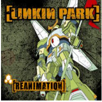
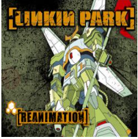

ABOUT
Rooted at the crossroads of aggressive metal and beat-driven hip-hop, Linkin Park became one of the most successful acts of the early 21st century by incorporating elements from across genres, injecting hardcore rap, raucous punk, atmospheric electronic, and even polished pop stylings into their music. Despite being burdened with the oft-derided nu-metal and rap-rock genre designations, they soon evolved beyond those associations into a more complex beast. Indeed, as their original band name and debut album title suggested, they were a hybrid of forces, relying as much on the vocal interplay between singer Chester Bennington and rapper Mike Shinoda as on the band's muscled instrumentation, which layered DJ Hahn's effects atop heavy, processed guitars and pounding percussion. No matter their direction, pain and catharsis remained at their core. From the commercial peak of their hip-hop-influenced, multi-platinum breakthrough albums Hybrid Theory (2000) and Meteora (2003), into a brief electronic phase (2010's A Thousand Suns), and ultimately to their final pop moment (2017's One More Light), they stayed ahead of the curve without sacrificing heaviness or chart success. Months after the release of their seventh and final album as the founding lineup, frontman Chester Bennington passed away, closing the book on a nearly two-decade run that included five chart-topping albums and tens of millions of records sold across the globe. Drummer Rob Bourdon, guitarist Brad Delson, and MC/vocalist Mike Shinoda attended high school in Southern California, where they formed the rap-rock band Xero in 1996. Bassist Dave "Phoenix" Farrell, singer Mark Wakefield, and DJ/art student Joseph Hahn joined soon after, and the band courted various labels while playing hometown shows in Los Angeles. Few companies expressed interest in Xero's self-titled demo tape, however, prompting Wakefield to leave the lineup (he would later resurface as the manager for Taproot). When replacement singer Chester Bennington climbed aboard in 1998 -- sharing vocal duties with Shinoda in what would become a crucial part of their signature sound -- they rebranded as Hybrid Theory and issued an eponymous EP. Still struggling to find an audience, they finally caught the attention of Warner Bros. and chose a new name: Linkin Park, a misspelled reference to Lincoln Park in Santa Monica. With support from Warner Bros. vice-president Jeff Blue, the band entered the studio with Don Gilmore shortly thereafter to record what would become a diamond-certified worldwide smash.
 

Linkin Park titled their debut album Hybrid Theory, a tribute to the band's past, and released the record during the fall of 2000. "Crawling" and "In the End" were massive radio hits; the latter song even topped the U.S. Modern Rock chart while peaking at number two on the Billboard Hot 100, an example of the band's crossover appeal. Linkin Park joined the Family Values Tour and played shows with Cypress Hill, leading the group to log over 320 shows in 2001 alone. Come January 2002, Hybrid Theory had received three Grammy nominations and sold over seven million copies. (Sales later topped ten million, earning the album "diamond status" and making Hybrid Theory one of the most successful debuts ever.) Despite their meteoric rise, however, Linkin Park spent the remainder of the year holed up in the recording studio, again working with producer Don Gilmore on a follow-up album. Meanwhile, the timely summer release of the platinum Reanimation helped appease the band's eager audience, offering remixed versions of Hybrid Theory's tracks by famous faces from bands such as Korn, Deftones, Orgy, Jurassic 5, the Roots, Taproot, Marilyn Manson, Staind, and Dilated Peoples. Facing overwhelming expectations, their official sophomore effort, Meteora, arrived in March 2003. The chart-topping record spawned several modern rock hits, including "Numb," "Somewhere I Belong," and "Breaking the Habit," which furthered the band's crossover appeal by simultaneously charting on the Hot 100. Linkin Park once again supported the album with ample touring, including performances with the second annual Projekt Revolution Tour (the band's own traveling festival, which originally launched in 2002) and additional shows with the likes of Metallica and Limp Bizkit. Live in Texas was released to document the band's strength as a touring act, and the bandmates tackled various personal projects before beginning work on a second remix project.


Released in 2004, Collision Course found the band collaborating with rapper Jay-Z, resulting in a number of mashups that sampled from both artists' catalogs. Collision Course topped the charts upon its release, the first EP to do so since Alice in Chains' Jar of Flies, and Jay-Z furthered his association with the band by asking co-founder Mike Shinoda to explore the possibility of a solo hip-hop project. He did, dubbing the project Fort Minor and releasing The Rising Tied in 2005 with Jay-Z as executive producer. Linkin Park then reconvened in 2006 to begin work on a third studio album, which saw Shinoda sharing production credits with Rick Rubin. The resulting Minutes to Midnight, a more traditional rock affair that largely left behind their trademark hip-hop heart, arrived in 2007, debuting at number one in several countries and spawning the Top Ten single "What I've Done." In between albums, the band contributed the theme to Transformers: Revenge of the Fallen, "New Divide," which became one of their most enduring hits. In 2010, the band returned to the studio with Rubin to produce their fourth studio album. Veering off-course once again, A Thousand Suns was a left-field experimental project based largely in ambient electronica, which divided their fans. Nevertheless, singles "The Catalyst" and "Waiting for the End" were both chart-topping hits. The following year, Bennington stated the band's desire to focus more on putting out new material rather than maintaining an exhaustive touring schedule, with the band having a goal of releasing a new album every 18 months. Linkin Park made good on that promise in 2012 with their Rick Rubin-produced fifth album, Living Things, which saw something of a return to their hybrid sound of yore. Upon its June release, the album debuted at the top of the Billboard charts, selling over 223,000 copies in its first week. It would soon be certified gold and singles "Burn It Down," "Lost in the Echo," and "Castle of Glass" maintained the band's presence on international singles charts.


As Linkin Park began work on their sixth studio album in the spring of 2013, Bennington announced that he was replacing Scott Weiland as the lead vocalist of Stone Temple Pilots; he was not leaving Linkin Park, but instead planned to be in both groups simultaneously. Bennington underscored his commitment to both bands in October of 2013 by releasing his debut EP with STP, High Rise, and appearing with Linkin Park on the remix album Recharged that same month. The latter album's lead single, "A Light That Never Comes," recorded in collaboration with DJ Steve Aoki, was a worldwide club hit. Another Aoki collaboration, "Darker Than Blood," was featured on the DJ's Neon Future II and entered the Top 50 on both Billboard dance and electronic charts. In June 2014, Linkin Park unveiled The Hunting Party, their sixth effort. The album -- produced by the bandmembers themselves -- was inspired by the punk, metal, and hardcore they had listened to as teens. The resulting collection was loud, raw, and heavy, featuring guest appearances by Tom Morello, System of a Down's Daron Malakian, Helmet's Page Hamilton, and hip-hop legend Rakim. Although it was kept out of the top spot on the U.S. charts, it hit number one in half-a-dozen countries around the world, and became one of the year's biggest sellers in hard rock circles. After promotion for The Hunting Party concluded, the band returned to the drawing board for a follow-up. When Linkin Park emerged from the studio in 2017, they were accompanied by a drastic shift in their sound that proved to be divisive. Lead single "Heavy," a duet featuring singer Kiiara and production by pop songwriters Julia Michaels and Justin Tranter, was a taste of things to come on the band's seventh effort, One More Light. Despite the clear pop trajectory, it became their fifth number one album and was soon certified gold. Barely two months after its release and one week before beginning a major American tour, Bennington was found dead at his home in Southern California; he was 41.


On October 27, 2017, months after Bennington's tragic passing, the band hosted a tribute concert for their late singer, Linkin Park and Friends: Celebrate Life in Honor of Chester Bennington. An all-star roster of friends joined the band at the Hollywood Bowl, including members of blink-182, Korn, Avenged Sevenfold, Yellowcard, Bring Me the Horizon, System of a Down, No Doubt, Orgy, One OK Rock, Bush, and Sum 41, as well as Zedd, Machine Gun Kelly, Alanis Morissette, and Steve Aoki. They closed the era with a release compiling Bennington's final performances with the band, One More Light: Live. Following Bennington's death, Linkin Park went on indefinite hiatus, although they continued working on a number of archival projects. In late 2020, they celebrated the 20th anniversary of their breakthrough with a double-disc set that bundled Hybrid Theory with a bonus set that included live recordings and rarities. Featured on the album was the song "She Couldn't," which was recorded in 1999, but never officially released. A remix of the group's debut single "One Step Closer" by electronic duo 100 gecs arrived in January 2021.